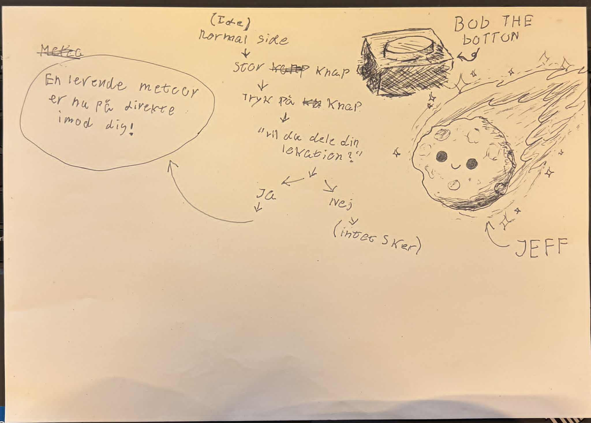
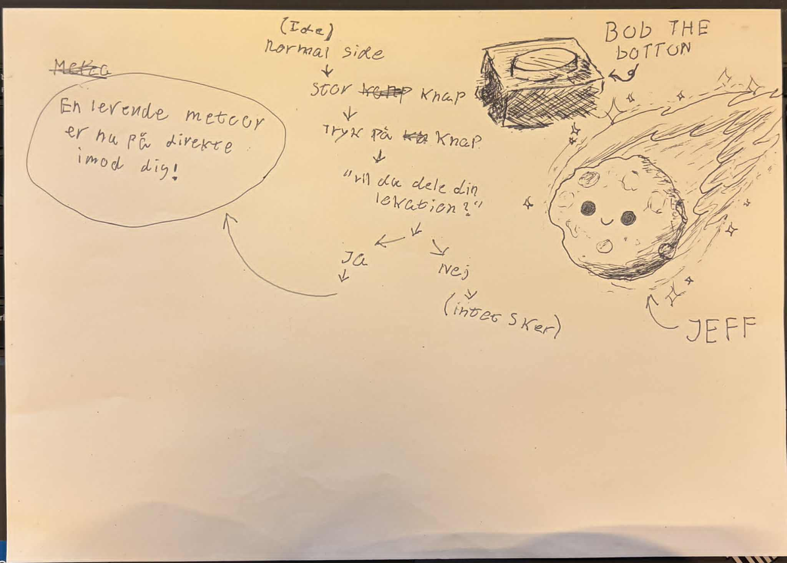

PROJEKTER FRA 1. SEMESTER
Her er mine udvalgte projekter fra mit 1. semester på multimediedesign. Projekterne viser mit arbejde med digitalt design, UX/UI og frontend-udvikling.
 Mit første website
Mit første website
 Emne site

emergency site
Emne site

emergency site
 Virksomheds-site
Virksomheds-site
Tema 1 – Introuge
Beskrivelse
Vi skulle som noget af det første i vores introforløb lave et digitalt præsentationskort om vores interview-makker, som skulle deles med resten af holdet. I opgaven var en del af formålet, at vi fik installeret og prøvet nogle af de grundlæggende værktøjer (software) på uddannelsen. Men vigtigst af alt, at vi skulle lære hinanden at kende! Kortet skulle indeholde et vellignende foto af vores makker, og noget relevant tekst om dem. Fx: hvem de er, hvorfor de har valgt EK MMD, hvor meget kendskab de har til det, de skal lære på studiet?
Løsning
Det færdige resultat blev et digitalt præsentationskort, som visuelt og indholdsmæssigt præsenterer min interview-makker. Kortet indeholder et vellignende foto samt kort, relevant tekst, der beskriver hvem personen er, hvorfor de har valgt multimediedesignuddannelsen, og hvilket kendskab de har til faget på forhånd. Designet er holdt simpelt og overskueligt, så fokus er på personen og indholdet, samtidig med at kortet fremstår professionelt og egnet til deling med resten af holdet.
Proces
Jeg startede processen med at interviewe min makker for at indsamle relevant information til præsentationskortet. Herefter udvalgte jeg de vigtigste pointer, som bedst repræsenterer personen. Parallelt med dette arbejdede jeg med at installere og afprøve de nødvendige programmer og værktøjer, som vi skal bruge på uddannelsen. Jeg eksperimenterede med opsætning, typografi og billede for at skabe et klart og sammenhængende udtryk, og justerede løbende designet ud fra feedback og egne overvejelser.
Læring
Gennem opgaven har jeg fået en bedre forståelse for, hvordan man formidler information visuelt og struktureret i et digitalt format. Jeg har lært at bruge grundlæggende værktøjer og software, som er centrale på uddannelsen, samt fået erfaring med at omsætte et interview til et færdigt visuelt produkt. Derudover har opgaven givet mig indsigt i vigtigheden af enkelhed og klar kommunikation i design, og ikke mindst bidraget til, at jeg lærte mine medstuderende bedre at kende.
Se opgavenTema 2 – Grundlæggende Web
Beskrivelse
Website-projektet var mit første website, hvor jeg arbejdede ud fra et mobile-first princip. Her havde jeg fokus på at skabe et responsivt website, der fungerer godt på både mobil og desktop. I projektet arbejdede jeg med CSS Grid, media queries og designprocesser som moodboards og wireframes. Projektet styrkede min forståelse for responsivt design og sammenhængen mellem visuelle valg og funktionalitet.
Løsning
Det færdige resultat blev et responsivt website udviklet med udgangspunkt i mobile-first-princippet. Sitet er opbygget med CSS Grid og tilpasser sig forskellige skærmstørrelser ved hjælp af media queries. Designet er enkelt og funktionelt med fokus på brugervenlighed og tydelig struktur, så indholdet er let tilgængeligt på både mobil og desktop. Website-projektet demonstrerer en grundlæggende forståelse for HTML, CSS og responsivt design.
Proces
Jeg startede projektet med at planlægge design og struktur gennem moodboards og wireframes, hvilket gav et visuelt overblik og en klar retning for det færdige website. Herefter opbyggede jeg sitets grundstruktur i HTML og arbejdede med styling i CSS ud fra mobile-first-tilgangen. Undervejs anvendte jeg CSS Grid til layout og media queries til at tilpasse designet til større skærme. Processen var iterativ, hvor jeg løbende testede og justerede layoutet for at sikre en sammenhæng mellem design og funktionalitet.
Læring
Gennem projektet har jeg opnået en grundlæggende forståelse for, hvordan man opbygger et responsivt website fra bunden. Jeg har lært at arbejde struktureret med mobile-first design, CSS Grid og media queries, samt hvordan planlægningsværktøjer som moodboards og wireframes understøtter en effektiv designproces. Projektet har givet mig større indsigt i samspillet mellem designbeslutninger og teknisk implementering, og har lagt et solidt fundament for videre arbejde med webudvikling.
Se opgaven
Tema 3 – UX/UI
Beskrivelse
UX/UI-temaet havde fokus på at designe en emneside med udgangspunkt i brugercentreret design. Opgaven bestod af research, idéudvikling, digital prototyping, kodning, præsentation og dokumentation. Formålet var at udvikle en løsning, der tager udgangspunkt i et selvvalgt emne og et tydeligt brugerformål, samt at arbejde struktureret med UX-metoder og designprocesser.
Løsning
Da opgaven ikke blev færdiggjort, nåede jeg ikke frem til en endelig kodet løsning. Jeg arbejdede dog med udvikling af idé og struktur for emnesiden samt udarbejdelse af digitale prototyper. Fokus var på at skabe en overskuelig og brugervenlig løsning med klart formål for brugeren. Arbejdet med prototyperne gav et tydeligt billede af, hvordan den færdige løsning skulle fungere og se ud.
Proces
Jeg startede processen med at udvælge et emne og definere et formål for brugeren. Herefter arbejdede jeg med research og idéudvikling, hvor jeg tog stilling til målgruppe, indhold og struktur. På baggrund af dette udarbejdede jeg en klikbar low-fidelity prototype, som blev brugt til at teste grundlæggende navigation og brugerflow. Senere arbejdede jeg videre mod en high-fidelity prototype med fokus på visuelle valg og UI-elementer. Undervejs blev der anvendt brugertests til at evaluere og justere løsningen.
Læring
Gennem UX/UI-temaet har jeg fået en grundlæggende forståelse for brugercentreret design og vigtigheden af research og test i designprocessen. Jeg har lært at arbejde med både low- og high-fidelity prototyper samt at bruge brugertests til at kvalificere designbeslutninger. Selvom projektet ikke blev færdiggjort, har temaet givet mig værdifuld indsigt i UX/UI-metoder og styrket min forståelse for, hvordan design og funktionalitet hænger sammen.
Se opgaven
Tema 4 – Brugergrænsefladeudvikling
Beskrivelse
I temaet Brugergrænsefladeudvikling arbejdede vi med udvikling af et Emergency Site baseret på et eksisterende fundament. Opgaven var individuel og havde fokus på at videreudvikle udvalgte manglende dele af sitet gennem UI-design, CSS og JavaScript. Nødsituationen var selvvalgt, og mit emergency-scenarie omhandlede en meteor, der var på kollisionskurs med én selv. Formålet med temaet var at arbejde eksperimenterende med brugergrænseflader, visuelle elementer og interaktion.
Løsning
Da opgaven ikke blev færdiggjort, nåede jeg ikke frem til et komplet emergency site med alle tre sider implementeret. Jeg arbejdede dog med udvikling af idé, visuel retning og dele af brugergrænsefladen inden for de rammer, som den udleverede kode, wireframes og style guide satte. Løsningen tog udgangspunkt i et dramatisk og alarmpræget udtryk, der skulle understøtte emergency-scenariet og tydeliggøre situationens alvor for brugeren.
Proces
Jeg startede projektet med at sætte mig ind i den udleverede kodebase og de wireframes, som sitet skulle følge. Herefter valgte jeg mit emergency-scenarie og arbejdede med idéudvikling og visuelle overvejelser, der kunne understøtte fortællingen om en meteor-nødsituation. Undervejs arbejdede jeg med styling i CSS samt udvalgte interaktive elementer i JavaScript. Processen var præget af eksperimenterende arbejde, hvor fokus var på at afprøve UI-elementer og forstå samspillet mellem design, kode og brugeroplevelse.
Læring
Gennem temaet har jeg opnået en bedre forståelse for brugergrænsefladeudvikling og arbejdet med eksisterende kode som fundament. Jeg har lært at tilpasse design og UI-elementer til en given style guide samt fået erfaring med at arbejde eksperimenterende med CSS og JavaScript. Selvom projektet ikke blev færdiggjort, har temaet givet mig værdifuld indsigt i, hvordan visuelle valg, interaktion og kode tilsammen skaber en sammenhængende brugeroplevelse i et emergency-scenarie.
Se opgavenTema 5 – Virksomheds-site
Beskrivelse
Dette projekt er et gruppearbejde, hvor vi arbejdede med redesign af Amazons website. Formålet var at skabe et mere moderne og brugervenligt website med et tydeligere visuelt udtryk. Projektet tog udgangspunkt i analyse af den eksisterende hjemmeside og resulterede i et nyt designforslag med fokus på overskuelig navigation og klar formidling af den uoverskuelige side.
Løsning
Det færdige resultat blev et redesignforslag af Amazons website med fokus på et mere moderne, overskueligt og brugervenligt udtryk. Løsningen indeholder en tydeligere visuel hierarkisering, forbedret navigation og et mere konsistent design, der gør det lettere for brugeren at orientere sig på siden. Redesignforslaget viser, hvordan komplekst indhold kan formidles mere klart gennem strukturerede layout- og designvalg.
Proces
Projektet startede med en analyse af Amazons eksisterende website, hvor vi identificerede udfordringer i forhold til brugervenlighed, visuel støj og navigation. På baggrund af analysen udarbejdede vi idéer til forbedringer og udviklede et nyt designforslag. I gruppen arbejdede vi med wireframes, designprincipper og visuelle valg for at skabe en mere sammenhængende løsning. Samarbejdet i gruppen var centralt i processen, og vi fordelte opgaverne for at sikre en effektiv arbejdsproces.
Læring
Gennem projektet har jeg lært, hvordan analyse af et eksisterende website kan bruges aktivt som grundlag for designbeslutninger. Jeg har opnået erfaring med redesign-processer, brugervenlighed og visuel kommunikation i større og komplekse websites. Derudover har gruppearbejdet styrket mine samarbejdsevner og min forståelse for, hvordan forskellige kompetencer kan bidrage til en fælles løsning.
Se opgaven